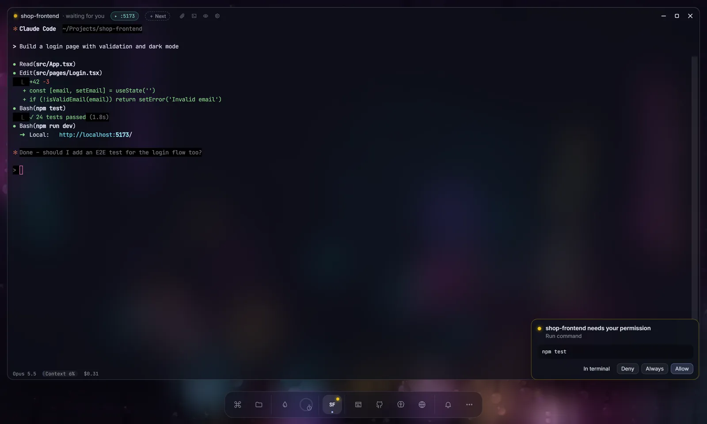

A free Windows app for Claude Code. See what every session is doing, answer the one that’s waiting in one click, and let Claude remember your project.
For Windows 10 and 11. Works with your own Claude plan.

One of them has been waiting for 14 minutes.
Every session gets a dot: green while it works, amber when it waits for you, blue when it’s done. The question comes to you as a card, on your PC or on your phone.
npm test
Try it: click Allow.
Claude remembers your project.
Decisions, pitfalls and conventions go into a project memory of plain Markdown notes. The next session starts with what the last one learned.
shop-frontend/.vibedesk/brain/
- Login flow.mdarea
- Auth API.mdarea
- Cookie, not localStorage.mddecision
- CRLF breaks snapshots.mdpitfall
- Design tokens.mdconvention
- Error copy style.mdconvention
- Test setup.mdfact
- Reset links expire after 1 h.mddecision
- ›new session in shop-frontend
- knows 7 notes from earlier sessions
- ›Add a password reset
- ●brain: read Login flow, Auth API, Cookie, not localStorage
- ●Edit(src/pages/ResetPassword.tsx)
- ●brain: learned “Reset links expire after 1 h”
And it’s a nice place to be.
Rain on the window, a lofi radio without an account, or your own Spotify. Zen mode hides everything except Claude.
Safe to try.
VibeDesk sits around the real Claude Code. It doesn’t replace it, and it doesn’t hide what Claude does.
# five things you can check on GitHub
- runs the real Claude Codethe official
claudeCLI, with your own login - leaves your settings alone
~/.claude/settings.jsonis never changed - stays on your PCsettings, stats and the project memory live locally
- needs no accountanonymous counting only if you say yes
- is open sourceMIT license, every line on GitHub
Is VibeDesk made by Anthropic?
No. VibeDesk is an independent, unofficial open-source project. It runs the real Claude Code CLI that you install and log in to yourself.
What do I need?
Windows 10 or 11 (64-bit) and a Claude Pro or Max plan or an Anthropic API key. If Node.js or Claude Code are missing, VibeDesk offers to install them on first start.
Is it really free?
Yes. VibeDesk is free and open source under the MIT license. Claude usage is billed by Anthropic through your own plan, not by VibeDesk.
Windows says “Windows protected your PC”.
The installer is not code-signed, so SmartScreen may warn about it. Click More info, then Run anyway. To check the file, compare its SHA256 checksum with the one in the release notes.